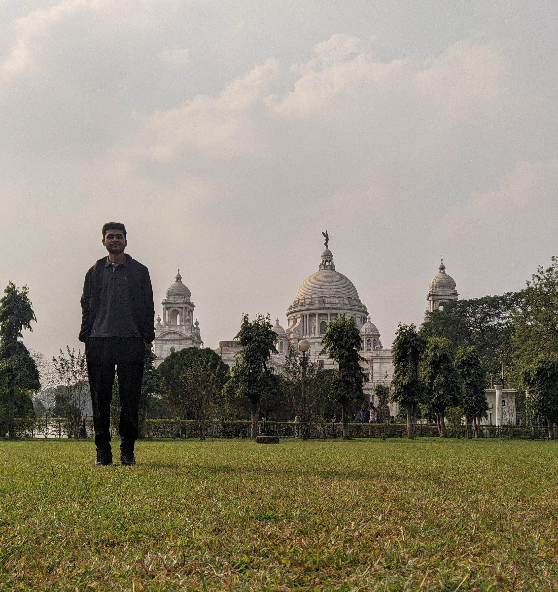

Embedded Systems · Control Engineering
— Project demonstration
Host-Target model approach in SIMULINK reduces load on the target hardware and enables faster signal sampling rates
Speed control of BLDC motor using FOC for increased efficiency and performance. Implemented on STM32 with real-time state machine management on FreeRTOS and safety critical motor control logic inside high-priority ISRs.
Absolute angle sensors are used for sensing rotor position in closed-loop motor control applications.
Current sensing is required for safety in control circuits especially inverters and for torque control in BLDC motor drive applications. Implemented on B-G431-ESC1 STM32G431 evaluation board.

Hi! I'm an Electrical engineer focusing on embedded systems and controls engineering. I love equations that can define real world physics and math tools that are used for controlling it.
My work focuses on developing efficient embedded control software for time sensitive applications both in bare metal and in RTOS. If you're looking for someone to design a controller for your next motor control project, or you want to build a high precision electromechanical joints for your humanoid or robotic arm, hit me up.
Being said that, I'm always trying to learn new things and currently exploring modelling and design of behavioral control for fixed-wing and single-rotor aircrafts. And outside engineering and physics I also share a deep passion for art,economics and finance. So, If you have a challenging project and feels like I will be a good fit, reach out.
Also while I'm not designing control systems or writing code, you can find me enjoying architecture, art, and nature.